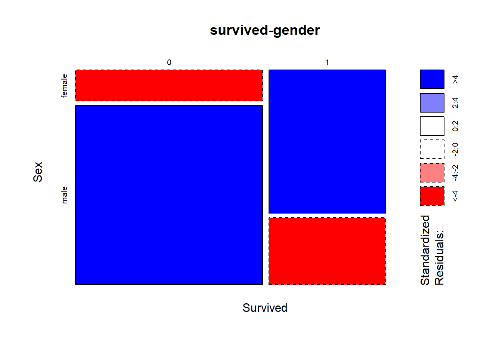
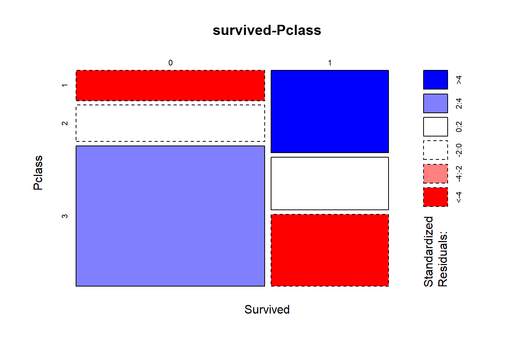
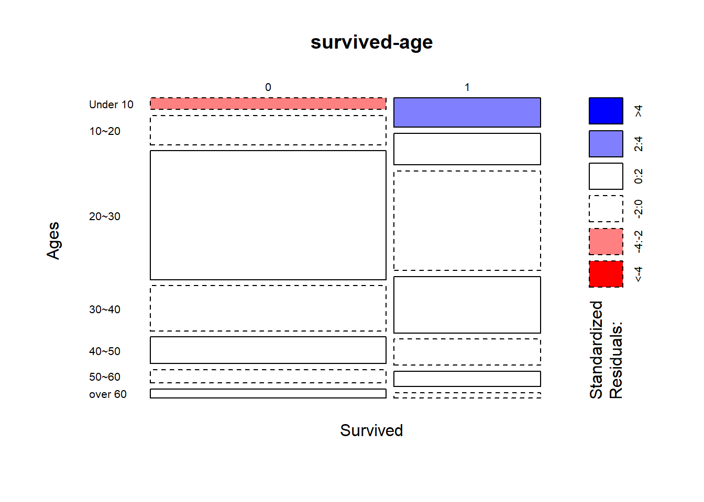
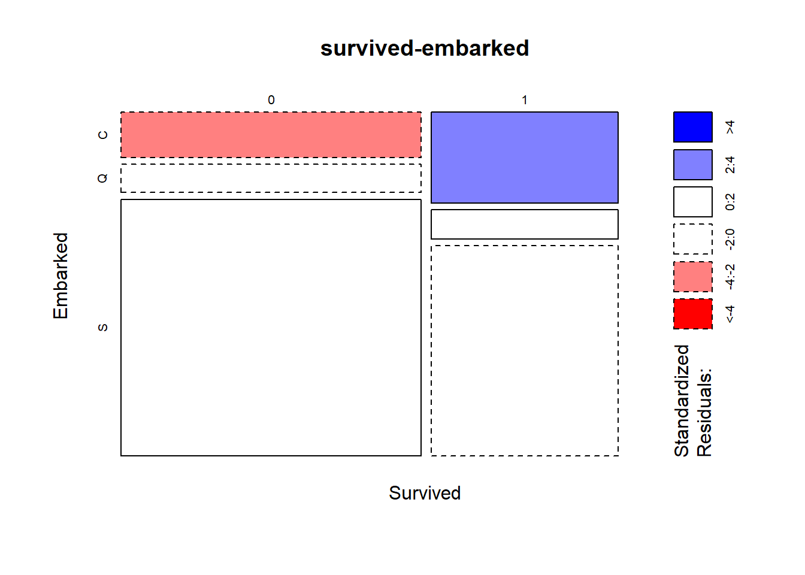
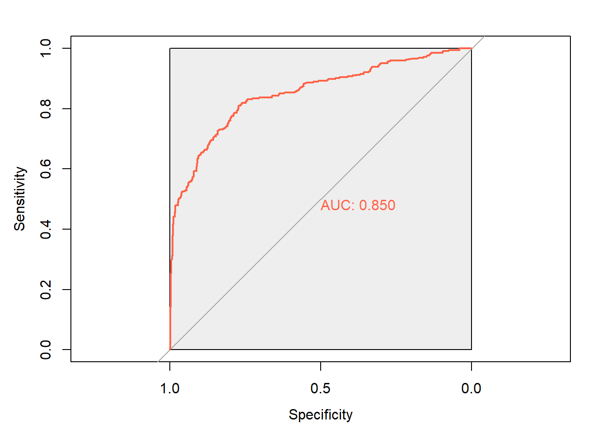

train <- read.csv('./train.csv', header=T)team3_김지윤
데이터 파악
str(train)'data.frame': 891 obs. of 12 variables:
$ PassengerId: int 1 2 3 4 5 6 7 8 9 10 ...
$ Survived : int 0 1 1 1 0 0 0 0 1 1 ...
$ Pclass : int 3 1 3 1 3 3 1 3 3 2 ...
$ Name : chr "Braund, Mr. Owen Harris" "Cumings, Mrs. John Bradley (Florence Briggs Thayer)" "Heikkinen, Miss. Laina" "Futrelle, Mrs. Jacques Heath (Lily May Peel)" ...
$ Sex : chr "male" "female" "female" "female" ...
$ Age : num 22 38 26 35 35 NA 54 2 27 14 ...
$ SibSp : int 1 1 0 1 0 0 0 3 0 1 ...
$ Parch : int 0 0 0 0 0 0 0 1 2 0 ...
$ Ticket : chr "A/5 21171" "PC 17599" "STON/O2. 3101282" "113803" ...
$ Fare : num 7.25 71.28 7.92 53.1 8.05 ...
$ Cabin : chr "" "C85" "" "C123" ...
$ Embarked : chr "S" "C" "S" "S" ...나이 컬럼 결측치에 평균 넣기
train$Age[is.na(train$Age)] = mean(train$Age, na.rm = TRUE)Embarked 컬럼의 빈값을 샘플링해서 채우기
#train$Embarked == ''
train$Embarked[train$Embarked == ''] <- sample(na.omit(train$Embarked), 2)나이컬럼 범주화-> Ages컬럼추가
Ages <- cut(train$Age, breaks=c(0, 10,20,30,40,50,60,Inf), right=F,
labels=c('Under 10', '10~20', '20~30', '30~40', '40~50', '50~60', 'over 60'))
train$Ages <- Ages
train$Ages <- factor(train$Ages)성별 컬럼 수치화-> gender컬럼추가
train$gender <- factor(train$Sex, levels=c('female', 'male'), labels = c(0, 1))
train$gender <- as.numeric(train$gender)독립성검정
survivors_Sex <- table(train$Sex, train$Survived)
survivors_Pclass <- table(train$Pclass, train$Survived)
survivors_Ages <- table(train$Ages, train$Survived)
survivors_Embarked <- table(train$Embarked, train$Survived)chisq.test(survivors_Sex)
Pearson's Chi-squared test with Yates' continuity correction
data: survivors_Sex
X-squared = 260.72, df = 1, p-value < 2.2e-16chisq.test(survivors_Pclass)
Pearson's Chi-squared test
data: survivors_Pclass
X-squared = 102.89, df = 2, p-value < 2.2e-16chisq.test(survivors_Ages)
Pearson's Chi-squared test
data: survivors_Ages
X-squared = 23.389, df = 6, p-value = 0.000676chisq.test(survivors_Embarked)
Pearson's Chi-squared test
data: survivors_Embarked
X-squared = 25.964, df = 2, p-value = 2.301e-06성별, pclass, 연령, 출발지 모두 생존과 관계가 있음
두 변수간 관련 강도 확인_두 변수간 연관관계 측정
library(vcd)Loading required package: gridassocstats(survivors_Sex) X^2 df P(> X^2)
Likelihood Ratio 268.85 1 0
Pearson 263.05 1 0
Phi-Coefficient : 0.543
Contingency Coeff.: 0.477
Cramer's V : 0.543 assocstats(survivors_Pclass) X^2 df P(> X^2)
Likelihood Ratio 103.55 2 0
Pearson 102.89 2 0
Phi-Coefficient : NA
Contingency Coeff.: 0.322
Cramer's V : 0.34 assocstats(survivors_Ages) X^2 df P(> X^2)
Likelihood Ratio 23.060 6 0.00077657
Pearson 23.389 6 0.00067600
Phi-Coefficient : NA
Contingency Coeff.: 0.16
Cramer's V : 0.162 assocstats(survivors_Embarked) X^2 df P(> X^2)
Likelihood Ratio 25.364 2 3.1071e-06
Pearson 25.964 2 2.3009e-06
Phi-Coefficient : NA
Contingency Coeff.: 0.168
Cramer's V : 0.171 카이제곱 통계량에 기초해 파이계수, 분할계수, 크래머V를 출력
이중 크래머 V의 범위가 0~1로 연관성을 파악하는데 가장 용이할 것으로 판단
Cramer’s V = 0.1: 작음 / Cramer’s V = 0.3: 중간 / Cramer’s V >= 0.5: 큼
성별: 관련 강도 큼/pclass: 중간보다 큼/연령, 출발항구: 작음
두 변수간 관계 모자이크 플롯
mosaicplot(~Survived+Sex, data=train, shade=TRUE, main='survived-gender')
사망자에서는 남성이 많고 생존자는 여성이 많음
두 범주형 변수간 큰 차이를 보이고 있음을 알 수 있음
mosaicplot(~Survived+Pclass, data=train, shade=TRUE, main='survived-Pclass')
사망자 중에서는 3클래스에 속한 사람이 많고 생존자 중에서는 1클라스에 속한 사람이 많음
두 범주형 변수간 분명한 차이가 존재 -> 밀접한 관련 존재
mosaicplot(~Survived+Ages, data=train, las=1, shade=TRUE, main='survived-age')
연령별로 생존여부에 차이를 보임 -> 두 변수간 밀접한 관계 존재
mosaicplot(~Survived+Embarked, data=train, shade=TRUE, main='survived-embarked')
출발지 간 사망자와 생존자간 비율 차이가 존재 -> 두 범주형 변수간 밀접한 관계가 있음
생존여부와 다른 변수간의 이항 로지스틱 회귀분석
non=c('PassengerId', 'Name', 'Embarked', 'Cabin', 'Ticket', 'Ages', 'Sex', 'SibSp')
train_2 <- train[, !(names(train)%in% non)]
str(train_2)'data.frame': 891 obs. of 6 variables:
$ Survived: int 0 1 1 1 0 0 0 0 1 1 ...
$ Pclass : int 3 1 3 1 3 3 1 3 3 2 ...
$ Age : num 22 38 26 35 35 ...
$ Parch : int 0 0 0 0 0 0 0 1 2 0 ...
$ Fare : num 7.25 71.28 7.92 53.1 8.05 ...
$ gender : num 2 1 1 1 2 2 2 2 1 1 ...titanic_logit <- glm(Survived~., data=train_2, family=binomial(link='logit'))
summary(titanic_logit)
Call:
glm(formula = Survived ~ ., family = binomial(link = "logit"),
data = train_2)
Deviance Residuals:
Min 1Q Median 3Q Max
-2.6092 -0.6392 -0.4340 0.6192 2.4112
Coefficients:
Estimate Std. Error z value Pr(>|z|)
(Intercept) 7.457185 0.625069 11.930 < 2e-16 ***
Pclass -1.116496 0.136735 -8.165 3.20e-16 ***
Age -0.035116 0.007536 -4.660 3.17e-06 ***
Parch -0.232750 0.114890 -2.026 0.0428 *
Fare 0.001724 0.002180 0.791 0.4291
gender -2.696102 0.194144 -13.887 < 2e-16 ***
---
Signif. codes: 0 '***' 0.001 '**' 0.01 '*' 0.05 '.' 0.1 ' ' 1
(Dispersion parameter for binomial family taken to be 1)
Null deviance: 1186.66 on 890 degrees of freedom
Residual deviance: 800.89 on 885 degrees of freedom
AIC: 812.89
Number of Fisher Scoring iterations: 5pclass, age, gender -> 매우 밀접한 관계가 존재
parch -> 약하지만 관계가 있음
fare -> 관계가 없음
생존여부 예측
titanic_logit_pred <- predict(titanic_logit, data=train_2, type='response')
titanic_logit_pred <- factor(titanic_logit_pred>0.5, levels=c(TRUE, FALSE), labels=c(1, 0))
table(titanic_logit_pred)titanic_logit_pred
1 0
320 571 생존자->320명, 사망자->571명으로 예측됨
예측과 결과비교_혼동행렬
table(train_2$Survived, titanic_logit_pred, dnn=c('Actual', 'Predicted')) Predicted
Actual 1 0
0 79 470
1 241 101사망자->생존자로 예측: 79명
사망자->사망자로 예측: 470명
생존자->생존자로 예측: 241명
생존자->사망자로 예측: 101명
회귀모델 정확도
mean(train_2$Survived == titanic_logit_pred)[1] 0.797979879.7%의 정확도를 보여줌
성능 평가 지표
library(pROC)Type 'citation("pROC")' for a citation.
Attaching package: 'pROC'The following objects are masked from 'package:stats':
cov, smooth, var#install.packages('pROC')
x <- roc(Survived~titanic_logit$fitted.values,data=train)Setting levels: control = 0, case = 1Setting direction: controls < casesroc_plot <- plot.roc(x, col='tomato',print.auc =TRUE,max.auc.polygon = TRUE)